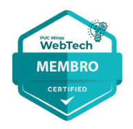
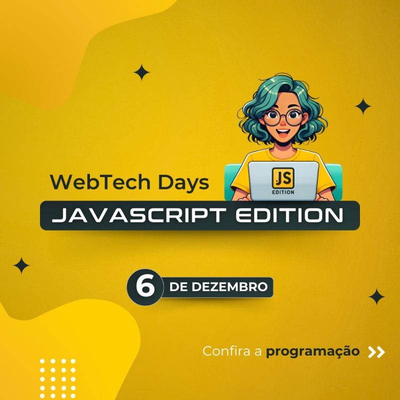

Olá pessoal, este é um grupo de alunos dos cursos de Tecnologia da Informação da PUC Minas. Nosso objetivo é gerar espaço de trabalho para que alunos e professores criem juntos aplicações, ferramentas e conteúdo para interessados em criar soluções e produtos digitais.
Várias contribuições têm origem também nos trabalhos de alunos e professores dos cursos de pós-graduação da PUC Minas em Tecnologias Digitais.
Conheça nossos ambientes e as nossas ações, clique aqui. Entre em contato conosco e venha conhecer nosso Lab para interagir com os membros e mentores. Há muita coisa para fazer juntos. Venha com a gente. 
Nossos canais: LinkedIn | YouTube | Instagram
WebTech Days
- WebTech Days - JavaScript Edition

- Local: PUC Minas Praça da Liberdade - Auditório Liberdade
- Data/horário: 06/12/2027
- Programação
- Abertura do Evento
– WebTech
- Catarina Castro, Gabriel Silva e Pedro Braga (WebTech - PUC Minas)
- Boas práticas com
JavaScript
- João Lima
- await,
async não é sync. I promise.
- Rommel Carneiro (WebTech PUC Minas)
- Frameworks Front
End mais populares
- Samuel Silva ()
- Mesa redonda -
Tendências no mundo JS
- Lucas Porto - Mediador
- Luis Baldi
- PrimoDev
- Samuel Silva
- Abertura do Evento
– WebTech
WebTech Labs
- Git e Gitflow Orientações sobre o uso do git e o GitFlow, ferramentas fundamentais para o desenvolvimento colaborativo, ajudando a manter o código organizado e permitindo o trabalho em equipe de maneira eficaz.
- API RESTful com Node.js + BD + Segurança + Docker Roteiro para montagem de uma API RESTful na plataforma Node.JS, com operações de CRUD (Create, Read, Update e Delete) e segurança integrada baseada no uso de tokens JWT (JSON Web Token) como formato de identificação, além do uso da biblioteca Knex como QueryBuilder integrando banco de Dados PostgreSQL.
- API RESTful com SpringBoot + BD + Segurança + Docker Roteiro para o desenvolvimento de APIs RESTful em projetos Spring Boot utilizando Docker para facilitar a criação de contêineres e isolamento de serviços, além de gerenciamento de banco de dados PostgreSQL com o uso do Flyway para migrações de banco de dados.
- Plataforma ELK --> Elastic Seach + Logstash + Kibana Ambiente de busca com Elastic Search indexando de forma automatizada conteúdo disponível em banco de dados Postgres, além de orientações sobre as diversas formas de consulta à API do Elastic Search.
- Automação Web e Webscrape com Puppeteer Puppeteer é um mecanismo que simula o navegador Web de forma programática para automatizar açoes na Web, contemplando testes de software e raspagem de dados (WebScrape).
- Plataforma API Gateway com Kong Configuração de ambiente para a implementação de um API Gateway com base no Kong Gateway, tendo o PostgreSQL como base de dados e o Konga como dashboard de administração.
- Documentação de APIs REST com OpenAPI Specification Apresentação de detalhes do OpenAPI Specification, o padrão de documentação de APIs RESTful.
WebTech'ers (Membros)
Alunos
- Catarina F. M. Castro - catfmcastro
- Gabriel Henrique Silva Pereira - gab-hsp
- Guilherme Leroy - ggleroy
- Henrique Silverio Nahim - hsnahim2005
- Jhonata Silveira Dias - jhonatasdias
- Julia Gabriela de Resende - ju-rsende
- Julia Carvalho Carneiro - jubju
- Jully Ketely - jullysilva
- Kimberly Liz Spencer Lourenço - kspencerl
- Luca Azalim - lucaazalim
- Pedro Henrique Braga - bragap
- Rafael Moreira - rafamtf
- Talisson Augusto - nisuk3
Mentores | Professores
- Ana Coimbra - anacoimbrag
- Lucas Porto - portolucas
- Ilo Rivero - ilorivero
- Rommel Carneiro (Idealizador do projeto) - rommelcarneiro